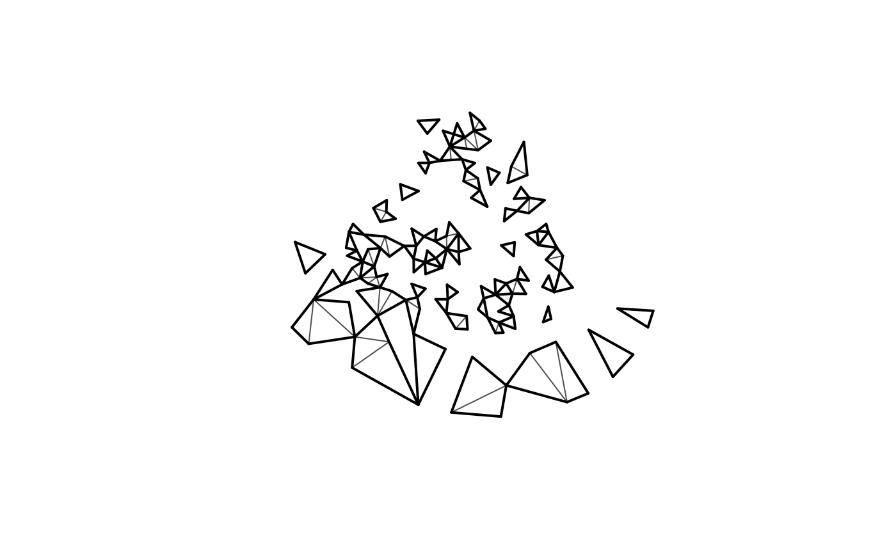

![[Experimental]](figures/lifecycle-experimental.svg) (from version
(from version 0.5.0.9003)
Constructs a new mesh based on a subset of the triangles of an existing mesh.
The current version drops any edge constraint information from the mesh.
Author
Finn Lindgren Finn.Lindgren@gmail.com
Examples
mesh_sub <- fm_subset(fmexample$mesh, 1:100)
mesh_sub
#> fm_mesh_2d object:
#> Manifold: R2
#> V / E / T: 173 / 267 / 100
#> Euler char.: 6
#> Constraints: Boundary: 234 boundary edges (1 group: 0), Interior: 0 edges
#> Bounding box: (-4.644074, 4.004812) x (-3.997839, 3.275186)
#> Basis d.o.f.: 173
plot(mesh_sub)

if (requireNamespace("geometry", quietly = TRUE)) {
print(m <- fm_delaunay_3d(matrix(rnorm(30), 10, 3)))
print(fm_subset(m, seq_len(min(5, nrow(m$graph$tv)))))
}
#> fm_mesh_3d object:
#> Manifold: R3
#> V / E / T / Tet: 10 / 38 / 54 / 25
#> Euler char.: 1
#> Bounding box: (-2.586141, 1.095199) x (-2.178999, 2.512680) x (-1.243433, 1.748147)
#> Basis d.o.f.: 10
#> fm_mesh_3d object:
#> Manifold: R3
#> V / E / T / Tet: 8 / 19 / 17 / 5
#> Euler char.: 1
#> Bounding box: (-2.586141, 1.095199) x (-2.178999, 2.512680) x (-1.243433, 1.748147)
#> Basis d.o.f.: 8